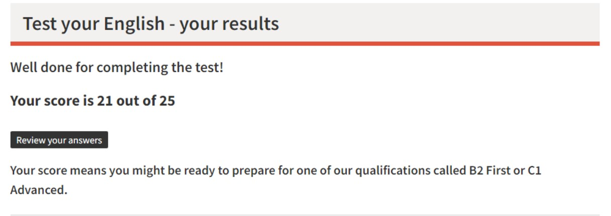

Victor Williams s3992257@student.rmit.edu.au https://github.com/VictorWilliams-RM/Assignment-1-My-Profile- I’m Victor Williams living in Australia, Victoria. High school education (De La Sallle). I’m 24 years sold and speak English and Ukranian fluently. Fun fact about myself is that I was born in Ukraine and came to Australia when I was 11.

My interest in IT comes from school where I studied it in year 11 and 12. Live took me on a different path after school where I spent 6 years cooking and ended up running a kitchen, but I decided that wasn’t for me and I wanted to go back to study. IT always has been interesting to me however not specific field. I hope in studying this and other courses I find the area that suits me and my interests. There wasn’t a specific event or person that sparked my interest in IT but if I had to take to pick one, I’d say Michael Reeves. Michael is an online person who specialises in making inventions for different scenarios. I wasn’t sure where to go and study so I called Open Universities and spoke to a person there for a long time and we decided that RMIT was the best choice for me to begin my study. I had a look at the courses, and we decided that it was best to do the introductory ones first and then see how I go. My expectations are to gain a deeper understanding of the world of IT and how to use it to further study it. The course so far has been interesting and inviting. How I can apply the skills learned to everyday use and to make things easier for myself and others around me.
https://careers.bungie.com/jobs/4680538/lead-gameplay-engineer
This would be in ideal job as I am interested in video games and play a bit of Destiny 2 made by Bungie. I think they're a great company that respects and cared for their employees. This position entails being responsible for development of gameplay for a video game and other people who are working on it. You work on early versions of the game with several people to make the experience as nice as it can be for the players. This also entails complex communications with other teams to develop a game. Skills that are required to apply for this job are as follows. High experience with C++ coding. Experience as a software engineer in game development, building collision models, and input layers. Currently I do not possess the knowledge to do any of it unfortunately. My plan to come even remotely close for qualifying for this job would be to continue with my study. I would need to know how to make models for a game and design collision hitboxes for building debris and characters. Before becoming a Lead gameplay developer, I would have to be a gameplay developer working in a team with other developers to hone my skills. As well as learn how to code in C++ because I only know a little bit of Python at the moment.
https://www.16personalities.com/profiles/fd152acd64aef http://www.educationplanner.org/students/self-assessments/learning-styles-quiz.shtml https://www.cambridgeenglish.org/test-your-english/general-english/
The results of these tests have different meanings to me. The first test is honestly spot on with my personality and I feel like it has been laid out in front of me. The second test is also a close result to how I learn. I tend to do better when learning in a visual aspect. The third result is to test my general English skill, the test consists of sentences, and you need to select the right word/words to go in place. I think that these tests don’t really influence my ability to work in a team as I feel I would do the work assigned to me and help with other work if needed. I am a closed and personal person but if the team requires it, I will go out of my shell and do what’s needed. When forming a team, I would most likely form it with members who differ from me personality wise as they may offer different ideas and approaches to the challenge in fort of us.
The project I am passionate is to make a Dungeons and Dragons (DnD) character sheet that functions as a dice roller and a stat tracker. DnD character sheets consist of main attributes as follow. Strength, Dexterity, Constitution, Intelligence, Wisdom and Charisma. Those range from 1-20 any number above 10 that increases in increments of 2 gets a +1 added to their ability checks. Those that are below 10 decrease in increments of2 they get -1. For example If strength is 14 it gets a +2 to ability checks. If Dexterity is 8 it gets a –1 to ability checks. Most ability checks are rolled with a dice with 20 sides (D20) other die are D12 D10 D8 D6 D4 D2 and D100. The reason I am motivated is that I play DnD with my friends and have a lot of fun doing so. All the online/app character sheets that exists usually require a payment or don’t offer the recourses that I need. There are 9.5 million players of the 5th edition of DnD worldwide and I feel like the community is lacking a proper online character sheet that provides a service of storing weapon stats and character attributes. Base DnD stats as listed above are the main source of how the game is played by a certain character. With that said the base stats reflect other skills that rely on the base stats those being: Acrobatics (dex), Animal Handling(wis), Arcana(int), Athletics(srt), insight(wis) and many more. As well as saving throws that profit from the modifiers of the base stats. Saving throws are in the same category as the base stats .If Strength is 20 then saving throw of strength gets a +5 to its roll. The products I want to design takes all these numbers in and sorts them into its relevant data types in this case being numerical. Different weapon types and tools do different type of damage so my product would need to differentiate it. One weapon might scale with strength and another with dexterity as well as spells most of the time scale with your intelligence. With that said you also add your proficiency modifier to the roll plus your modifier for the type of weapon/spell used. Of course for items such as weapons it would need to separate the data types between the item name and the damage to add the damage. Rolls to see if the attack hit are a separate roll thus needing to also add the needed modifiers to it. I would also have to consider inspiration that other players might give the character and add that to the number. Inspiration being a number/roll of a certain die. In order to achieve this I would have to design a character sheet that has separate roles for each data type and essentially sort the weapons and spell type (str, dex, int, cha) into their respective categories. By doing so the user can simply attack and roll for both the attack and damage with their modifiers already added by the program. I am not certain if I want a mobile or a web based program as the design would have to differ for both because of the screen space limit on mobile vs a computer monitor. If I were to make it in a browser it would be a lot easier as I can design a character sheet similar to the character sheets out there and add the necessary buttons that would perform the function that I need it to do. If I were to go for a unique design, I could have an are in the middle that displays the rolls characters make. For example the sheet would have 2 different modes Roll and Edit. In roll mode you can click on a type of roll you want to make. If you were making a strength saving throw you’d just click on the strength saving throw and that the dice would roll and add the necessary modifiers, then display the total outcome. For other dice I would have buttons that simply show the outcome of the roll without modifiers as most of the other dice don’t get affected by them. For a damage roll the program would know what weapon the character is using and add the required modifiers to the roll. Is the user needs to roll multiple of the same die the program would simply have an up or down counter to increase or decrease the number of dice. For mobile app it would have to span across multiple pages or have a zoom out and in feature for ease. Tools and technology for developing this program I would use are Python for coding the maths behind the rolls and the addition of relevant data to each role. As well as using python to display the names of each data type(strength, dexterity, intelligence and so on) and assigning the weapon damage type. I feel like python would be the easiest because it’s the only programming language I know. In terms of design I would use Paint3D as it I am familiar with the program and have confidence in creating a design that would suit the program. https://apps.microsoft.com/store/detail/paint-3d/9NBLGGH5FV99 https://www.python.org/ The skills required for development of this program are the ability to use Python and Paint3D. It is extremely likely that anyone can do this through practise and tutorials and have the level of understanding of both programs in order to achieve the goal. I believe it that the hardest part of this would be writing the code for the program.